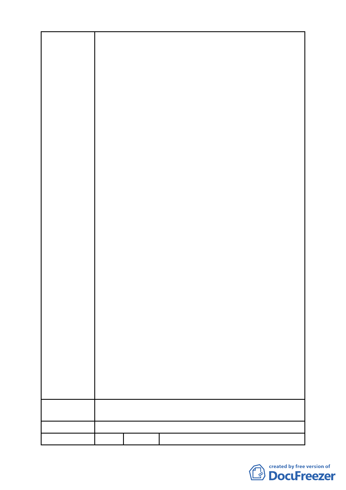

二、依98年10月30日北市都規字第09836521507號函規定
表訂規範內容、格式，於民國98年11月3日送請臺北
市都市計畫委員會(以下簡稱「都委會」) 辦理公展
在案、俟後獲臺北政府府都規字第09838862600號函
於98年12月23日至99年1月22日公展完成。
三、陳情人等依前揭相關草案(98年9月10日建議方案，如
附表)設計規劃，且皆已完成環境影響評估審查作
業，俟都市計畫公告後即可申請核備。
四、然幾經折衝，眼見已近完成整合階段，難料99年5月
19日第二次專案審查會議，與前揭諸多會議結論不一
致，又將議題回至討論原點，分列說明如下：
(一)臺北市「基隆河(中山橋至成美橋段)附近地區土地使
用分區與都市設計管制要點」(北段地區)計畫案(下
稱「大灣北段通檢計畫」)，配合社經情勢變更已屆
通盤檢討，本有其必要性。
(二)本地區「金泰段臺北好好看開發案」、「大灣北段通
檢計畫」，是否併審或分審？主軸審議原則反覆，致
審查進程裹足不前。如認二案應與分審，亦無將「金
泰段臺北好好看開發案」依92年公告之都市計畫審
議，無視該地區通檢之必要性。
(三)於99年2月11日第一次都委會就其土地及建築物之使
用限制既已達初步共識(如商業區 (供商業購物中心
使用)及娛樂區(供娛樂購物中心使用)申請住宅使用
之樓地板面積不得超過法定容積之二分之一、地面層
l~3樓作指定項目使用、高度不得超過90公尺±l0公
尺…)，有否重行組成小組會議，推翻前次大會審議
共識之理？
五、民間企業配合政府政策推動「促進都市再生2010年臺
北好好看」開發案不應被視為盜匪，著眼良策混沌不
明、投資風險無法掌握，勢必將政府、產發學界及開
發商、地主先前努力付諸東流、回至原 點，不免陳
情人等戒慎恐懼必須正視問題提出拙見供相關單位
慎量，以挽政府威信及落實政策執行貫徹力。
六、敬祈鈞局酌參，俾維市府政策執行之貫徹及土地所有
權人合法權益。
建議辦法
陳請從速審查坐落臺北市中山區金泰段「促進都市再生
2010 年臺北好好看」開發計畫案。
委 員 會 決 議 所提建議業已錄案供委員審議參考。
編 號 6 陳情人 宏普建設股份有限公司、弘傑不動產顧
- 61 -